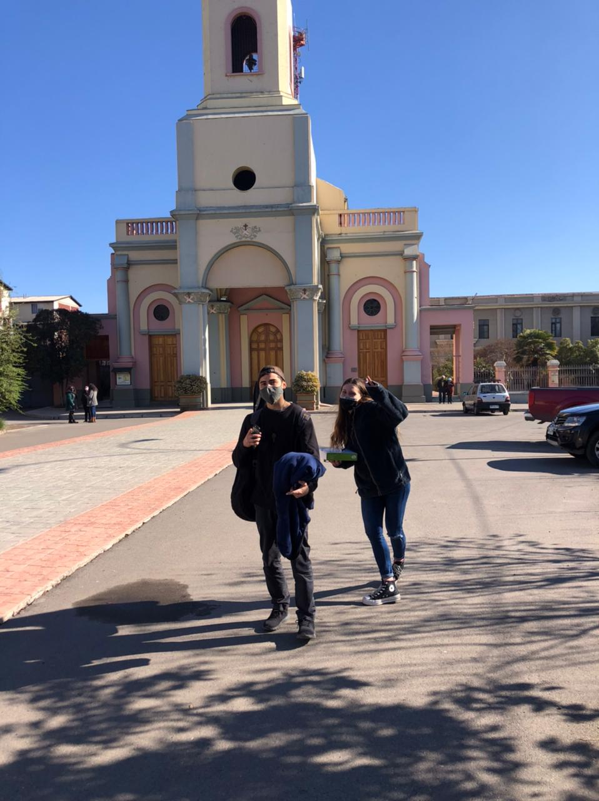
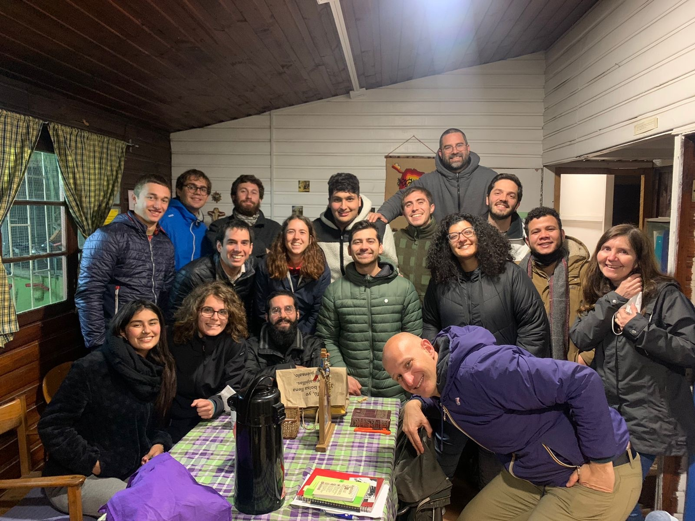
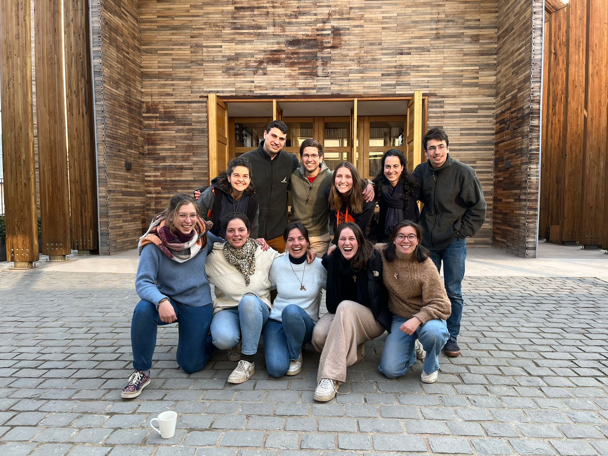
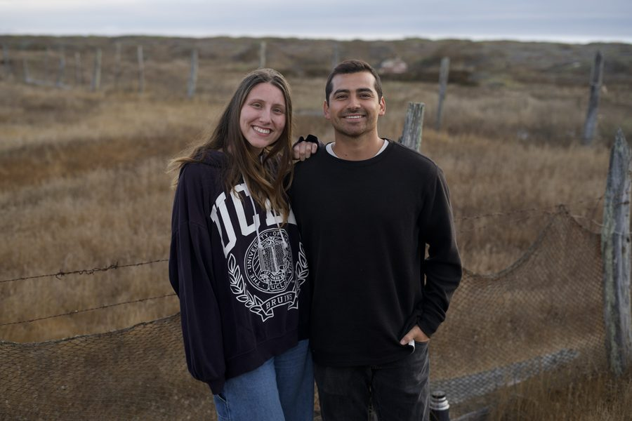
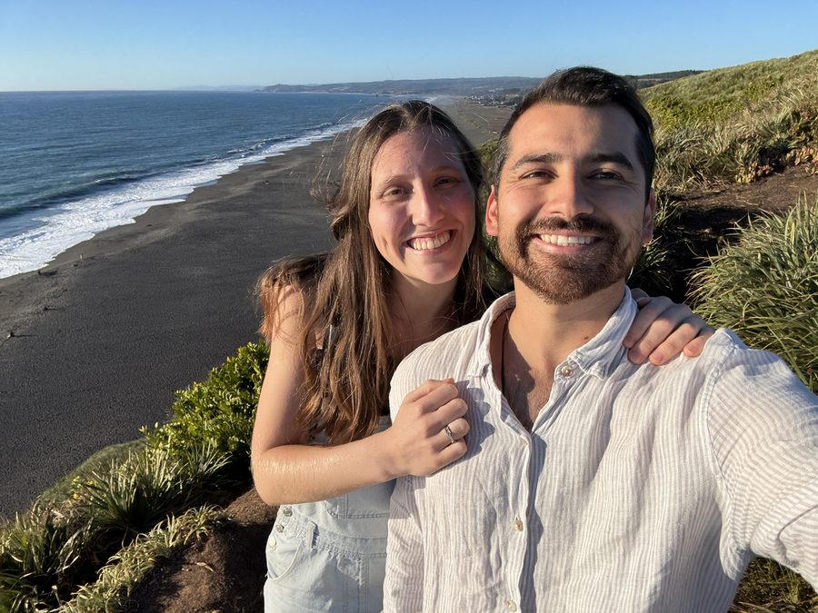
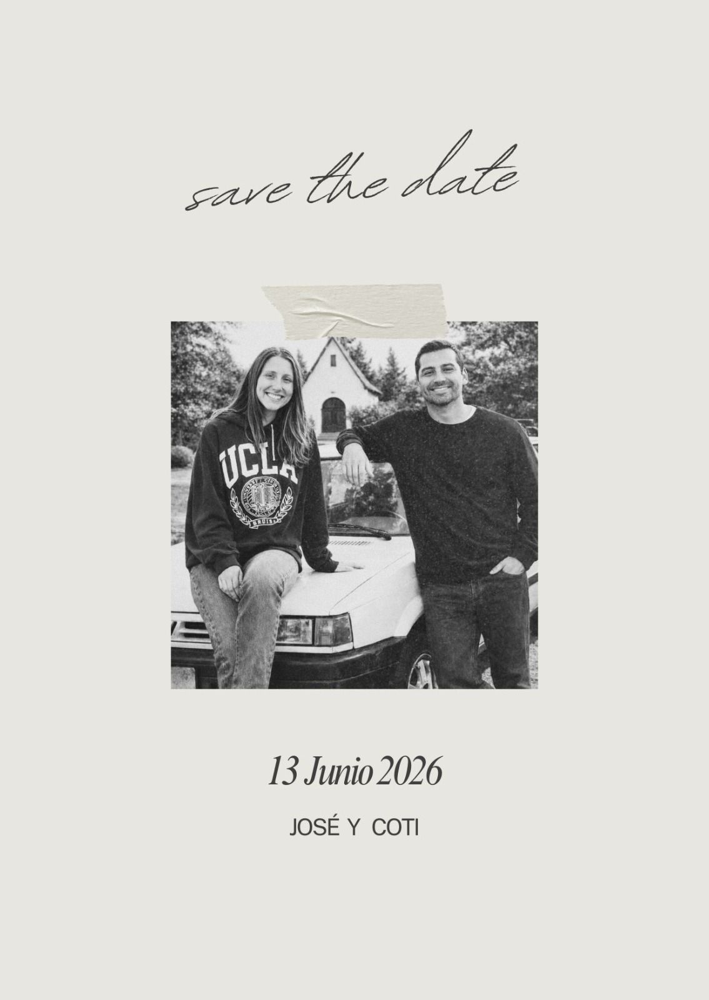

"Por eso deja el hombre a su padre y a su madre y se une a su mujer, y se hacen una sola carne." Génesis 2, 24
4.8 años en 6 fotos






Y ahora los queremos con nosotros para celebrar lo vivido y lo que se viene!
En una de las apariciones de la Virgen en Fátima, Nuestra Señora dijo a Lucía, una de los tres pastorcitos videntes:
"Jesús quiere servirse de ti para darme a conocer y amar. Quiere establecer en el mundo la devoción a mi Inmaculado Corazón." — Nuestra Señora de Fátima a Lucía, 1917
"A quien le abrazare prometo la salvación y serán queridas sus almas por Dios como flores puestas por mí para adornar su Trono. [El Corazón de María] es un Corazón tan lleno de bondad, dulzura, misericordia y liberalidad que nadie ha acudido a él con humildad y confianza sin recibir sus consuelos." — San Juan Eudes
Nos casamos el 13 de junio de 2026, día en que la Iglesia celebra la memoria del Inmaculado Corazón de María. Como no es casualidad, tomamos las lecturas propias de la fiesta, como un regalo de la Providencia.
Queremos empezar esta nueva etapa bajo la ternura y la profundidad de María. Es María quien, como escribe que Lucas, "guardaba todas estas cosas en su corazón" (Lc 2, 51). Es mucho lo vivido, lo que agradecemos, lo que no comprendemos, y todo eso, lo llevamos en el corazón.
El día anterior —como cada año— la Iglesia celebra el Sagrado Corazón de Jesús. Dilexit Nos (Francisco, 2024) lo recuerda así:
"«Nos amó», dice san Pablo refiriéndose a Cristo (Rm 8,37), para ayudarnos a descubrir que de ese amor nada «podrá separarnos» (Rm 8,39). Pablo lo afirmaba con certeza porque Cristo mismo lo había asegurado a sus discípulos: «los he amado» (Jn 15,9.12). También nos dijo: «los llamo amigos» (Jn 15,15). Su corazón abierto nos precede y nos espera sin condiciones, sin exigir un requisito previo para poder amarnos y proponernos su amistad: «nos amó primero» (1 Jn 4,10). Gracias a Jesús «nosotros hemos conocido el amor que Dios nos tiene y hemos creído» en ese amor (1 Jn 4,16)." — Dilexit Nos, 1
Queremos dar testimonio de ese amor, desde la familia, de la iglesia, para el mundo: un corazón que escucha, que guarda, que ama. Por eso recibimos esta fecha como un regalo para nuestro matrimonio.
Isaías 61, 9-11
"Sus hijos se harán famosos entre las naciones y sus nietos, en medio de los pueblos. Todos los que los vean reconocerán que son una raza bendecida de Yavé. Salto de alegría delante de Yavé, y mi alma se alegra en mi Dios, pues él me puso ropas de salvación y me abrigó con el chal de la justicia, como el novio se coloca su corona, o como la esposa se arregla con sus joyas. Pues así como brotan de la tierra las semillas o como aparecen las plantitas en el jardín, así el Señor Yavé hará brotar la justicia y la alabanza a la vista de todas las naciones."
Salmo — 1 Samuel 2, 1. 4-5. 6-7. 8abcd
R. Mi corazón se regocija en el Señor, mi Salvador.
Mi corazón se regocija en el Señor,
mi poder se exalta por Dios;
mi boca se ríe de mis enemigos,
porque gozo con tu salvación. R.
El arco de los valientes se ha quebrado,
los cobardes se ciñen de valor;
los hartos se contratan por el pan,
mientras los hambrientos engordan. R.
El Señor da la muerte y la vida,
hunde en el abismo y levanta;
da la pobreza y la riqueza,
humilla y enaltece. R.
Levanta del polvo al desvalido,
alza de la basura al pobre,
para hacer que se siente entre príncipes
y que herede un trono de gloria. R.
Lucas 2, 41-51
Los padres de Jesús solían ir cada año a Jerusalén por la fiesta de la Pascua. Cuando cumplió doce años, subieron a la fiesta según la costumbre, y acabada la fiesta emprendieron la vuelta; pero el niño Jesús se quedó en Jerusalén, sin que lo supieran sus padres. Estos, creyendo que estaba en la caravana, hicieron una jornada y se pusieron a buscarlo entre los parientes y conocidos; al no encontrarlo, se volvieron a Jerusalén en su busca. A los tres días lo encontraron en el templo, sentado en medio de los maestros, escuchándolos y haciéndoles preguntas; todos los que lo oían quedaban asombrados de su talento y de las respuestas que daba. Al verlo, se quedaron atónitos, y le dijo su madre: "Hijo, ¿por qué nos has tratado así? Tu padre y yo te buscábamos angustiados." Él les contestó: "¿Por qué me buscabais? ¿No sabíais que yo debía estar en la casa de mi Padre?" Pero ellos no comprendieron lo que quería decir. Él bajó con ellos a Nazaret y siguió bajo su autoridad. Su madre conservaba todo esto en su corazón.
Consentimiento, entrega de anillos y bendición de las arras.
Por definir
Santo Español
Por definir
Tres cantos
La comida será en modalidad cóctel extendido: habrá mesas y livings, algunos asignados (principalmente mesas) y otros de libre disposición.
Ver distribución de Mesas y Livings →
Si viajas en auto y tienes espacio, o si necesitas que alguien te lleve, únete al grupo de WhatsApp para coordinar el viaje Santiago → Curicó.
Unirse al grupo de WhatsAppExcelente opción de alojamiento en Curicó. Si mencionan que vienen por nuestro matrimonio, les aplicarán un descuento especial.
Ver en Google Maps →Suban sus fotos y videos del día a nuestra carpeta compartida. Nos encantaría revivir cada momento a través de sus ojos.
Subir fotos a Google Drive"Déjennos unas palabras que podamos guardar. Un deseo, un recuerdo, un consejo para esta vida que empezamos."
Dejar dedicatoriaSu presencia en este día es el mejor regalo que podemos recibir.
Si quieren acompañarnos con algo más, estas son nuestras tres propuestas: cubrir los gastos del matrimonio, preparar nuestra nueva casa, y emprender juntos un viaje a Roma para recibir la bendición del Papa como matrimonio.
Los gastos de este día
El hogar que construiremos
La bendición del Papa + LM
Lo que sea de su cariño, pero por sobretodo: oración, lo mejor que nos puedan entregar.